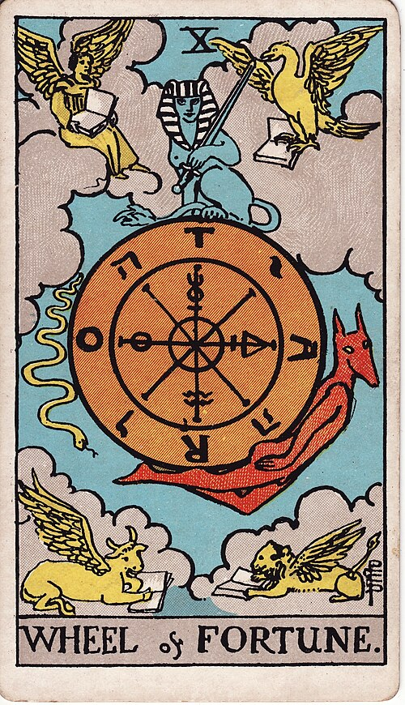

Guidance
Tarot · Rider–Waite–Smith deck
Ask one question.
Draw the cards.
Every card has its own meaning; the reading puts them in order around your question. You see the draw first and pay only for the written reading.
What should I keep in mind as I take the new role?
One cardA single answer$3
Three cardsPast · present · next$5
Celtic CrossTen cards, full spread$9
Draw three cardsReading delivered on the page and to your email.

I · Past
The High Priestess

II · Present
The Star

III · Next
Wheel of Fortune
What $5 buys
A written reading, about 600 words, in four parts.
- Each card in its position3 short sections
- How the cards answer your question1 section
- One thing to do this week1 line
- Saved to your emailopen it on any device
Example reading · excerpt
“What should I keep in mind as I take the new role?”
I · The High Priestess, past
You got here by listening more than you spoke. The card points to the quiet read you made of the people and the work before you said yes.
II · The Star, present
The Star is a card of steady repair after a hard stretch. In this position it asks you to start plainly: show up, do the first visible thing well, and let trust build from there…
Guidance pack
Five readings, any practice, any depth.
Tarot, oracle, runes, I Ching, astrology, numerology, dreams or names. Balance kept on your email, usable on any device.
$20one time
For reflection and entertainment. A reading is a prompt for thinking, not a prediction or professional advice.